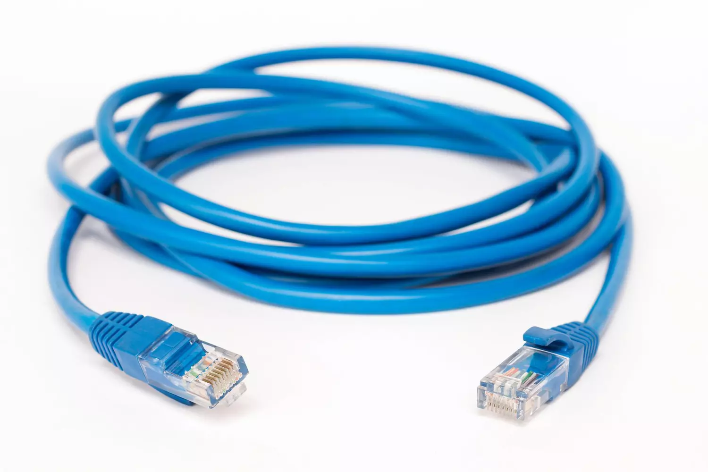
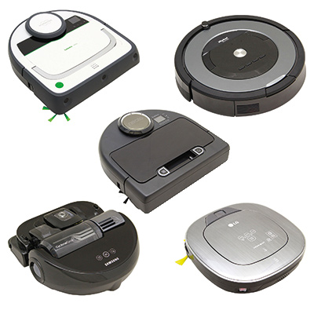

Num.Info
Un objet connecté est un objet qui communique avec internet,d'autre objet ou serveur par le biais de moyen de transmission comme le wifi, lifi, par cable ou onde radio dans le but de répondre à un besoin demandé par son utilisateur, Ils ont tous le même mode de fonctionnement
Ils captent une information, la traîte et la transmette sous forme d'une autre information, sois directement à l'utilisateur, sois sous forme d'autre action (par exemple allumer la lumiière commencer à chauffer ou refroidir une pièce, ...).
Aujourd'hui, ils sont partout et son présent dans une grande variété de domaines de la vie quotidienne et de la vie professionnelle
L'objet connecté que je présente est l''aspirateur robot.
L'aspirateur robot fonctionne comme un aspirateur, son but est d'aspirer tout forme de pousière ou autre petite particule pour nettoyer plusieurs pièce de la maison ou d'immeuble et rendre la vie à l'intèrieur plus agréable.
La particularité qui le fais différencier par rapport à l'aspirateur classique set qu'il est d'une taille plus petie, rendant l'accès à des zones plus restreint plus simple à pratiquer (par exemple sous les meubles, sous les canapés et fauteils), il fait des aller retour pour éviter d'oublier des partie du sol non-nettoyer, et vu qu'on parle d'un robot et qu'il est connecter à internet, il peut être activer à tout moment, l'utilisateur peut tout savoir sur lui (sa progression ou si son sac est rempli donc il faut le changer) et se désactive après avoir fini de tout nettoyer et rnetrer à sa base pour se recharger. Complètement autonome, l'intervention de son utilisateur est rarement demandé. Comme dit précédemment l'utilisateur sais tout sur le robot à partir de son téléphone portable et avec une application dédié (normalement l'application du constructeur ou indiqué sur la boîte ou lors de l'achat).
Ils ont d'abord un système por aspirer (comme un aspirateur) et d'un système qui dirige le robot et le fait repérer dans l'espace ,d'un système qui fait déplacer l'aspirateur robot et d'un système connectè à internet qui communique avec l'utilisateur à propos de l'état du robot (Position dans l'espace, capacité du sac, état de la batterie...).